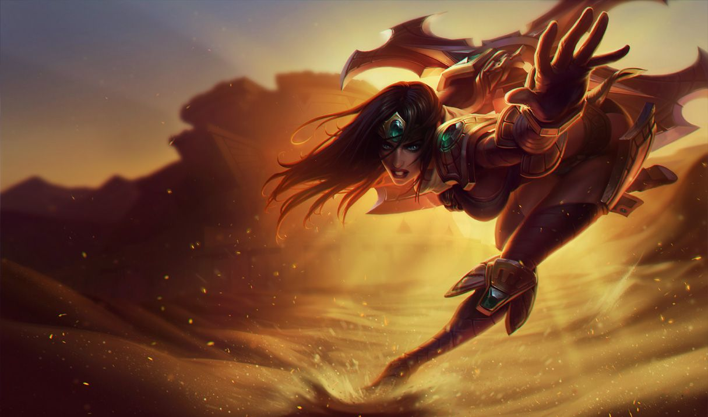

시비르
시비르
시비르, 전장의 여제
Sivir, the Battle Mistress

1. 배경
2. 스킬
2.1. 패시브 - 재빠른 발놀림(Fleet of Foot)
2.2. Q - 부메랑 검(Boomerang Blade)
2.3. W - 튕기는 부메랑(Ricochet)
공격이 치명타라면 튕긴 공격도 치명타를 가합니다.
2.4. E - 주문 방어막(Spell Shield)
2.4. R - 사냥 개시(On The Hunt)
사냥 개시 활성화 중 챔피언에게 기본 공격을 가하면 시비르의 기본 스킬 재사용 대기시간을 공격당 0.5초 감소합니다.
최근 피해를 입힌 적 처치에 관여하면 사냥 개시의 지속 시간이 초기화됩니다.
3. 장점
최상급의 라인 클리어 능력을 통한 턴 싸움에서의 우위
우월한 팀 단위 유틸성
최상급 광역 DPS
운영에 능함
4. 단점
떨어지는 단일 대상 화력
높은 아군 의존도
짧은 공격 사거리
성장 전까지 약하고 변수가 적음

저작물은 CC BY-NC-SA 2.0 KR에 따라 이용할 수 있습니다. (단, 라이선스가 명시된 일부 문서 및 삽화 제외)